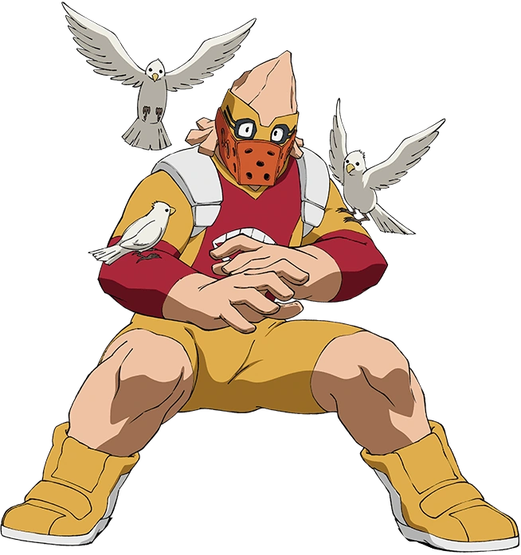

Koji Koda
Nome de Herói: Anima
Individualidade: Anivoice – Permite que ele se comunique e dê ordens a qualquer criatura do reino animal, desde insetos até grandes mamíferos.
Perfil:
Extremamente tímido, silencioso e gentil. Tem pavor de insetos (apesar do seu poder) e prefere usar linguagem de sinais ou falar muito baixo.